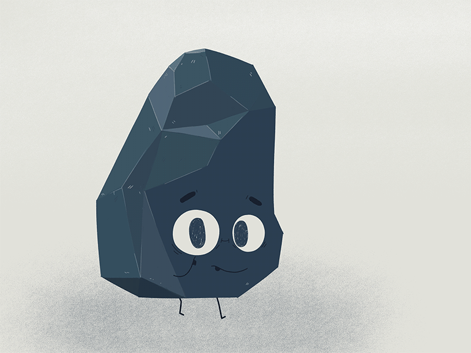
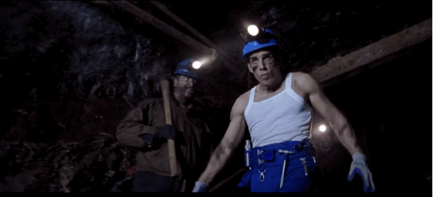
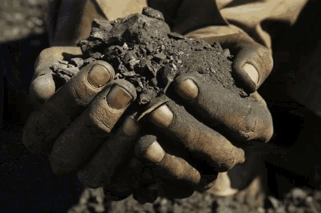

Barbórka (dawna pisownia Barburka), Dzień Górnika –
tradycyjne święto górnicze, obchodzone w Polsce 4 grudnia, w dniu św. Barbary z Nikomedii,
patronki dobrej śmierci i trudnej pracy. Poza górnikami Barbórkę obchodzą także geolodzy
i inne osoby wykonujące zawody związane z poszukiwaniem paliw kopalnych.
Odcinek Bolka i Lolka o tematyce górniczej:



Kto to jest górnik?
Górnik (w gwarze zawodowej gwarek, grubiorz, murcek, bergman) – w szerokim znaczeniu potocznym: każdy pracownik zakładu górniczego,
czyli kopalni; w węższym znaczeniu robotnik wykwalifikowany, tak zwany rębacz (gwarowo kopacz, hajer, hawierz, żeleźnik),
którego główne zadanie to urabianie kopaliny.
Mój dziadek był górnikiem 😁.